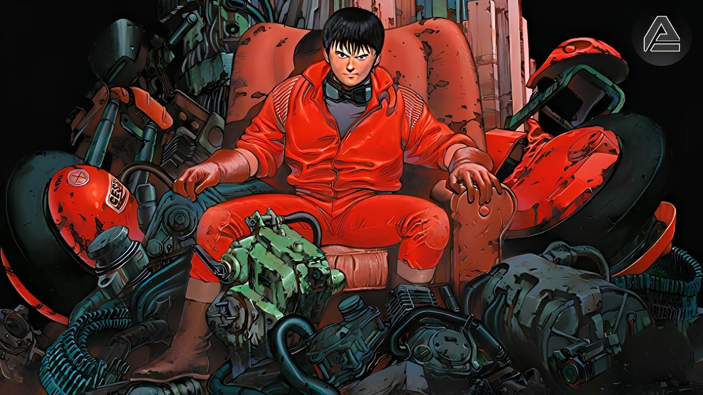

Film

Lien du film : Akira
Genres : Sci-fi, Action, Surnaturel
OST : 7/10
Date de la critique : 17 août 2026
Note du film
Texte de la note.
Synopsis
L'histoire se passe en l'an 2019, 31 ans après la troisième guerre mondiale. Les autorités de la ville de Neo-Tokyo mènent une lutte interminable contre les rebelles des "underground" qui dominent la ville. Alors qu'un gang de motards dont le leader est Kaneda passe son temps à se battre contre d'autres rebelles, Tetsuo, un membre du groupe, a un accident avec un enfant aux pouvoirs mentaux incroyables. Le gang de Kaneda est alors impliqué dans une affaire top secrète, tous sont emprisonnés puis relâchés par la suite, excepté Tetsuo qui subit diverses analyses et expérimentations. L'accident a déclenché chez Tetsuo l'apparition de pouvoirs psychiques très puissants. Il est alors pris d'assaut par l'armée mais il est décidé à tout ravager autour de lui, il veut se venger de la société pour l'avoir toujours considéré comme un être faible...